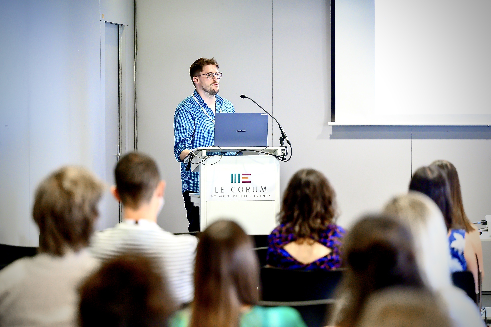

Evolutionary Biology · Ageing · Open Science
Lecturer in Biological Sciences · University of East Anglia

Edward R. Ivimey-Cook
I'm interested in understanding and investigating the huge diversity of ageing patterns that exists across the tree of life, from insects with elaborate parental care to fish, worms and birds.
My current work focuses on evolutionary theory, maternal senescence, the inter- and trans-generational effects of parental age and diet, and thermal tolerance. Threaded through all of these research themes is a strong commitment to open science and to improving the reproducibility of research across ecology and evolutionary biology.
I completed my PhD at the University of Edinburgh with Dr Jacob Moorad, where I studied maternal ageing in the burying beetle Nicrophorus vespilloides. I subsequently held postdoctoral positions at UEA with Prof. Alexei Maklakov, working on the nematode worm C. elegans, and at the University of Glasgow with Prof. Pat Monaghan, working on zebra finches, before joining UEA as a Lecturer.
Why senescence evolves and the striking diversity of ageing trajectories across animal species. Including the inter- and trans-generational effects of ageing, where parental age shape offspring life histories from one generation to the next.
How the thermal environment and diet shape life histories. Including heat tolerance and adaptation in seed beetles, and the effects of dietary restriction and fasting within and across generations.
Including code review, data- and code-sharing, and reporting standards. Building robust and reproducible scientific practice into the everyday scientific workflow.
A large part of my work revolves around making ecology and evolutionary biology more open, reliable and reproducible.
See the tools & apps I've built to support this work.
Open-source R packages and Shiny / web apps I've built and contributed to, to make research easier and more reproducible.
A point-and-click GUI for the metaDigitise package — pull data straight from published figures.
GitHub →A Shiny app that walks you through writing a high-quality README for research data and code.
GitHub →An R package for structured, reproducible simulations in ecology & evolution — co-authored (led by J. Pick).
EcoEvoRxiv →